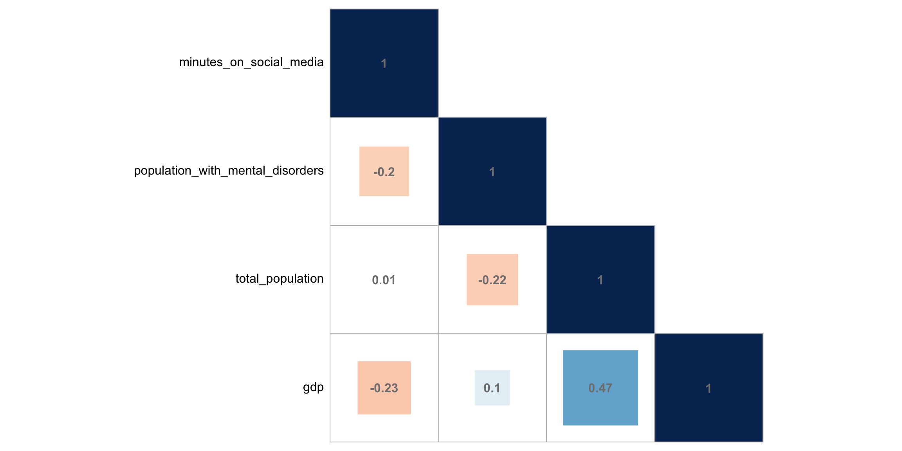

# load neccesary packageslibrary(tidyverse) #used for elementary data wrangling and visualizationlibrary(countrycode) #used to assign countries their respective regions and iso3 codeslibrary(lubridate) #used to deal with dates and timeslibrary(wbstats) #used to add total population and gross domestic product to countrieslibrary(plotly) #used for dynamic visualizationslibrary(naniar) #used for missing values visualizationlibrary(corrplot) #used for correlation matrixlibrary(quarto)# deactive scientific notation and round to two decimalsoptions(scipen =100, digits=2)knitr::opts_chunk$set(echo =TRUE)
1. Introduction
It is no surprise to say that social media plays an important role in a lot of people’s daily lives. What is not clear, however, is the exact toll that social networking sites have on our mental health. A single Google search with the key words “social media mental health” leads to the inevitable conclusion that spending more time on social media leads to greater mental health issues - but, is that really the case? Is it that unequivocally bad?
The present article aims to explore this relationship, having as a main question: How does this relationship between social media use and mental health actually look like? To this end, this work uses R programming language1 for the data wrangling and visualization, it draws heavily from Wickham & Grolemund’s textbook2 for the conceptual understanding of programming and statistics principles, and it explores multiple datasets (which are explained in the upcoming section).
2. Data
To approach the question in hand, the analysis focuses on a high-level relationship, specifically looking at indicators for both dailysocial media use and mental disorder prevalence at a country level.
2.a. Main Data: Social Media
Surprisingly or not, data on how people or countries use social media (or the internet for that matter) is scarce.
Given this scarcity and the available options, the data used is provided by the Global Web Index (also known as GWI or GlobalWebIndex). GWI is a global market research company that annually publishes a flagship report which contains diverse consumer metrics. In particular, GWI’s 2019 flagship report3 asks 1.7 million internet users aged 16-64 how many hours they spend connected to social network services during a typical day, yielding results for 45 countries - and, as a plus, this report includes results for previous years, spanning from 2012 through 2019. The data on page 8 of this report is manually transcribed to a CSV file, which will result in one metric that measures how many minutes (on average) a person will spend on social media per day, by country and by year.
2.b. Main Data: Mental Health
Data on mental health is chosen in function of the data available on social media, especially in terms of selecting age range.
This indicator is sourced from the Global Burden of Disease Study (GDB) carried out by the Institute for Health Metrics and Evaluation (IHME). The IMHE is an international, intergovernmental institute, that has created an interactive database4 in collaboration with thousands of researchers and policymakers to reflect recent data on over 300 diseases for over 200 countries. For this article, the data is first downloaded “as is” from their online portal, which will result in one metric that indicates the percentage of a country’s population with mental disorders in any given year (i.e., occurrence of mental disorders over its total population in that year). The parameters for downloading the data are as follows:
GBD Estimate: Cause of death or injury
Measure: Prevalence
Metric: Percent
Cause: Mental Disorders
Location: Select all countries and territories
Age: 10-54 years
Sex: Both
Annual rate of change: Deactivated
Year: 2012 through 2019
2.c. Supplementary Data: Socioeconomic Indicators
Besides the data on mental health and social media use, we will be adding socioeconomic indicators into the mix. In particular, we will bring in total population5 and gross domestic product (GDP)6 from the World Bank via the wbstats package.
2.d. Data Wrangling
Once the data sources have been defined and downloaded (when applicable), the following sections lists the operations needed to convert the datasets into a single, usable, dataframe.
Read in main data:
Once the data on social media has been transcribed and the data on mental health has been downloaded, we set the working directory and read the files.
Tidy main data:
The conversions applied to the mental health dataframe are renaming columns, dropping those that are not needed, and adding columns corresponding to country codes (added using the countrycode package) and regions (the last bit is added after merging both dataframes).
As for the social media data, the conversions needed are dropping the country names in favor of the ones used by the IMHE, converting hours into minutes (which facilitates calculating statistics and generating graphics), and adding columns to match to country codes (also using the countrycode package) and country regions (to be done after joining).
Merge main data:
Now that both dataframes are tidy, we join them into a single dataframe using country code and year as keys. This will result in a long table, where each row corresponds to a country’s annual observation for mental health and social media data.
Add country region:
Once the dataframes have been merged, we add country region (also using the countrycode package).
Read and tidy supplementary data:
Once these socioeconomic indicators have been added into a dataframe, we perform some additional cleansing such as renaming columns and selecting only those of interest.
Merge supplemental data:
Lastly, once the socioeconomic indicators have been tidied, the supplemental dataframe is merged to the main one (social media and mental health). Plus, columns are relocated so that each country’s information appears first, then the year, followed by the main data and the supplemental indicators.
Describe resulting dataframe:
Once all of the data has been tidied, the result is a dataframe with eight columns and 344 rows.
Each row corresponds to an observation for a distinct country in a distinct year.
As for the columns: the first three columns are character-type data and correspond to a country’s identifying information (country name, three-digit code, and region); one column corresponds to the year of each data point; and the remaining four are numerical variables and correspond to the data analyzed for each country (the percentage of its population with mental disorders, the average minutes a person spends on social media per day, gross domestic product and total population).
Unfold the code chunk below to observe all of the R code corresponding to the operations described above - otherwise, you can simply refer to the table (also below) to observe a random sample of the dataframe generated.
Code
# read in raw datasetssocial_media <-read_csv("GWI_socialmedia_2019.csv")mental_health <-read_csv("IMHE_mentaldisorders_2019.csv")# read and wrangle mental health datamental_health <- mental_health %>%select(location_name, year, val) %>%rename(country_name = location_name, population_with_mental_disorders = val) %>%mutate(country_code =countrycode(sourcevar = country_name, origin ="country.name", destination ="iso3c"))# read and wrangle social media datasocial_media <- social_media %>%mutate(country_code =countrycode(sourcevar = country_name, origin ="country.name", destination ="iso3c")) %>%mutate(social_media_use =hms(social_media_use)) %>%# split hours, minutes and secondsmutate(social_media_use =hour(social_media_use)*60+minute(social_media_use)) %>%#to get total minutes spent on social mediarename(minutes_on_social_media = social_media_use) %>%select(country_code, year, minutes_on_social_media) # dropping country_name# merge social media and mental health dataframesmental_health_social_media <-merge(mental_health, social_media, by=c("country_code", "year"))# add country regionmental_health_social_media <- mental_health_social_media %>%mutate(country_region =countrycode(sourcevar = country_name, origin ="country.name", destination ="region"))# read in socioeconomic datasocioeconomic_indicators <-wb_data(indicator =c("SP.POP.TOTL","NY.GDP.MKTP.CD") #World Bank codes for GDP and total population , country =c("countries_only") , start_date =2012 , end_date =2019 )# wrangle socioeconomic datasocioeconomic_indicators <- socioeconomic_indicators %>%rename(country_code = iso3c, year = date, total_population = SP.POP.TOTL, gdp = NY.GDP.MKTP.CD) %>%select(country_code, year, total_population, gdp) #dropping country name and two-digit code# merge socioeconomic data with social media and mental health dataframemental_health_social_media <-merge( mental_health_social_media , socioeconomic_indicators , by=c("country_code", "year") ) %>%relocate( country_name , country_code , country_region , year , population_with_mental_disorders , minutes_on_social_media , gdp , total_population )
Code
# code to generate snippet of resulting dataframermarkdown::paged_table(mental_health_social_media[sample(nrow(mental_health_social_media), 10), ])
3. Visualization
This section will explore multiple visualizations that aim to, firstly, explore and explain some of the data available. Consequently, it will triage and present the data in such a way to answer the research question. All of the visualizations will include a brief justification and explanation on the findings that can be drawn.
3.a. Accounting for Null Values
First of all, and mostly as a sanity check, a visualization to observe null values is created. As explained in the Data section of the article, data on social media is scarce and, even with the best source found, it is often incomplete. The following visualization aims to explore this incompleteness, plus it seeks to corroborate that the data wrangling operations have been performed successfully (the remaining variables should be complete).
Upon observing this graph, we can see that, indeed, their is missing data in most of the years with regards to social media data, while the rest of the variables are complete. From this, confirm that the mergers have been performed correctly (i.e., we expected the World Bank and the IMHE to have complete information) plus we reiterate the state of the data on social media use (i.e., coverage is expected to increase over the years, as more data is available and internet penetration rates increase).
3.b. Social Media and Mental Disorders Over The Years: Global
Having briefly explored the completeness of the data, we now focus on one of the main data: social media and mental health. GWI and IMHE provide a breakdown by country (and by several other indicators if we refer to the rest of their analyses). However, a general question we could ask is: how do the global trends in mental disorders and social media use look like? The following code seeks to explore this by grouping the data by year and then calculating global averages.
Code
lineplot_mental_health_social_media <- mental_health_social_media %>%select(year, population_with_mental_disorders, minutes_on_social_media) %>%# selecting variables of interestmutate(population_with_mental_disorders = population_with_mental_disorders*100) %>%group_by(year) %>%# step needed to calculate global meanssummarise_at(vars(population_with_mental_disorders:minutes_on_social_media), mean, na.rm =TRUE) %>%plot_ly(width =500) %>%add_trace(x =~year , y =~population_with_mental_disorders , name ="population_with_mental_disorders" , type ="scatter" , mode ="lines+markers" ) %>%add_trace(x =~year , y =~minutes_on_social_media , name ="minutes_on_social_media" , type ="scatter" , mode ="lines+markers" , yaxis ="y2" ) %>%layout(title =list(text ="<b>Global Averages Over The Years</b>", x =0) , xaxis =list(title ="Year") , yaxis =list(tickfont =list(color ="blue") , title ="Population with Mental Disorders (Yearly %)" ) , yaxis2 =list(tickfont =list(color ="orange") , title ="Minutes on Social Media (Daily)" , overlaying ="y" , side ="right" , automargin =TRUE ) , legend =list(orientation ="h"#, xanchor = "center"#, yanchor = "top" , x =0 , y =1 ) )lineplot_mental_health_social_media
From the above graph, we can observe that both social media use and mental disorders have increased in the last years. We can also observe that social media use only increases over the years, while mental disorder prevalence saw a decrease from 2012-2014.
Prevalence of mental disorders has remained stable at around 16% of the population, versus social media use that has gone from 100 minutes per day to 140. Also worthnoting that both social media use and mental disorder prevalence observed their steepest increases from 2014-2016.
3.b. Social Media and Mental Disorders Over The Years: By Country
Still focusing on the trends in the main data, the graphic below is a choropleth map that is meant to explore the hours people spend on social media, as well as the prevalence of mental disorders, by country over the years.
Code
choroplethmap_mental_health_social_media <- mental_health_social_media %>%plot_ly(type ='choropleth',locations =~country_code,frame =~year,width =750 ) %>%add_trace(z =~population_with_mental_disorders,colorscale ="YlOrRd",showscale =FALSE,reversescale =TRUE,text ="Mental Disorder Prevalence",visible =FALSE# Set the initial visibility of the trace to FALSE ) %>%add_trace(z =~minutes_on_social_media,colorscale ="Blues",showscale =FALSE,reversescale =TRUE,text ="Minutes on Social Media",visible =TRUE# Set the initial visibility of the trace to TRUE ) %>%layout(title =list(text ="<b>Country Averages Over The Years</b>", x =0),autosize =TRUE,updatemenus =list(list(active =0,type ="buttons",direction ="right",xanchor ="center",yanchor ="bottom",x = .5,y =-.1,buttons =list(list(label ="Click to view minutes on social media (blue)",method ="update",args =list(list(visible =list(TRUE, FALSE))) ),list(label ="Click to view mental disorder prevalence (red)",method ="update",args =list(list(visible =list(FALSE, TRUE))) ) ) ) ) )choroplethmap_mental_health_social_media
From the choropleth map we can see the change in data available on social media use for certain countries in Sub-Saharan Africa, versus the data available on mental disorders which remains constant over the years (both in terms of availability as well as amount, which is expected given that the global average on mental disorder prevalence also remains relatively constant at around 16%).
Another interesting finding is that, throughout the years, countries in Africa, Latin America and the Caribbean, set themselves as the ones where people seem to spend the most time on social networking sites, but these countries also seem to have a lesser rate of mental disorders; versus North America and Europe that seem to make less use of social media but have a higher presence of mental disorders.
3.c. Plotting Social Media Against Mental Health
To further explore what seems to be an inverse relationship between social media use and mental disorder prevalence, we create a scatter plot where the horizontal axis has social media use and the vertical axis represent mental disorder prevalence, using country region as a hue for the color and adding as a plus GDP for the data-point size.
Code
#animated scatterplot inspired by Plotly's source code#url: https://plotly.com/r/animations/scatterplot_mental_health_social_media <- mental_health_social_media %>%mutate(population_with_mental_disorders = population_with_mental_disorders*100) %>%plot_ly(x =~minutes_on_social_media , y =~population_with_mental_disorders , size =~gdp , color =~country_region , frame =~year , text =~country_name , hoverinfo ="text" , type ='scatter' , mode ='markers' , width =750 ) %>%layout(title =list(text ="<b>Mental Disorder Prevalence x Social Media Use</b>", x =0) , xaxis =list(title ="Minutes Spent on Social Media (Daily)") , yaxis =list(title ="Population with Mental Disorders (Yearly %)") )scatterplot_mental_health_social_media
As expected, we see data points being added over the years which corresponds to the data availability for social media use (e.g., Colombia is only added until 2018). But, most importantly, we can observe the big-picture trends remain constant over the years: Europe and Central Asia are on the higher end of mental health disorders, but on the lower end of hours spent on social media; where, in contrast, countries in Latin America, the Caribbean, and Sub-Saharan Africa are on the lower end of mental disorders, but higher end of hours spent on social networking sites.
This already points towards an interesting finding that actually goes against Google’s common sense: social media does not equate to mental disorder - or, at the very least, the more time you spend on social media does not correlate with mental disorders. More on this correlation - i.e., the quantitative assessment - in the following section.
3.d. Social Media vs. Mental Health By The Numbers
From the graph above we’ve suggested an interesting finding, but we’ve omitted total population and GDP. The section below is meant to explore this relation by generating a correlation matrix among the selected indicators, hence providing quantitative indicators to deny or confirm alleged relationships among variables.
Code
cor(select(mental_health_social_media, -starts_with(c("country", "year"))) , use ="na.or.complete" ) %>%corrplot(type ="lower"#makes correlations appear at the bottom , method ="square"#alternative: change to square or number , order ="FPC"#shows most relevant components first , tl.col ="black"#legend text color , tl.pos ="l"#includes only labels on the left , addCoef.col ='grey50'#includes grey correlation coefficients , cl.pos ="n"#removes color legend/gradient )

From the correlation matrix we can confirm our suspicions: there is indeed an inverse relationship between daily hours spent on social media and percentage of a population with mental disorders - albeit, the relationship is weak (-.20). This suggests that countries where people spend more time on social media also present a lower rate of mental disorders.
The other relationships can be summarized as follows:
GDP is the indicator that relates the most with the rest, and the strongest correlation it has is with total population. They are positively correlated and this makes sense - the more people a country has, the more workforce it has and, hence, the more business opportunities (and money) it can generate.
GDP is also weakly and negatively correlated with hours spent on social media. This means that the more money people have in a given country, the less time they are likely to spend on social networking sites. This could either suggest that people that live in countries with higher incomes have less time to spend on social media, or that they spend time in other activities.
Total population is also weakly and negatively linked to mental disorders, which suggests that the more people that live in a country, the less mental disorders are likely to prevail.
Lastly, GDP and mental disorders have one of the lowest correlations; and total population seems to be virtually unrelated to the time people spend on social media.
4. Reflection
With this project coming to an end, the lessons learned are humongous. First and foremost, most of the analysis was done by using (and learning) R which can be a challenge in and of itself. This came with the challenge of learning what each part of RStudio does, how to knit an RMarkdown document, and how to code everything to generate the results you expect.
From everything R entails, actually learning how to code and getting in a programmatic mindset proved to be the most daunting task. This implied understanding how R works, core concepts on which it is built on such as vectors, as well as figuring out how to use packages to the fullest - most notably the Tidyverse and its piping system which made the analysis so much more easier.
Then there’s the challenge of defining a research question. This began by selecting a topic of my interest - in this case, social media and mental health - and finding questions that could be made along with data to explore the question. On this note, finding data proved to be more daunting than expected, especially when it came to finding data on social media use. Several sources were explored before leading to the present data, all of which presented several limitations (mostly in terms of coverage and usefulness for the research question in hand).
Lastly, as a major challenge which drove this project, was the actual data analysis and visualization. Once the question and the sources were defined, came thinking about what to do with them? An initial exploration proved that merging the main data (social media and mental disorders) into a single dataframe could be useful, but it also proved that additional indicators could enrich the analysis (hence it was decided to include GDP and total population). Once the data is in a single table, came the process of actually analyzing it, which was assisted by different visualizations to observe null values, trends in the data over the years, and the actual (cot)relation between the variables of interest.
5. Conclusion
5.a. Findings
This research leads to a counter-intuitive conclusion: that more time on social media does not equate to greater mental health issues. As we see the world spend more time on social media with each passing year, and mental disorders also increase, we find that countries that spend more time on social media, such as those located in Latin America or Africa, actually tend to have a lesser rate of mental disorders. Why could this be?
This could be maybe due to the use that is given to social media, e.g. maybe countries that spend more time online do so to remain connected with friends and family, hence leading to less propensity towards mental illness. Conversely, it could be that countries that spend less time on social media, actually spend their time on other activities such as working or ruminating about their job (this also relates to the fact that countries that spend less time on social media and have greater rates of mental disorders are also higher income countries).
5.b. Limitations
However bold the research findings may be, it is worth highlighting that this study has major limitations. First and foremost, this study is conducted at a country-level, and such high levels of aggregations entail caution since it depends on data being recollected correctly at several levels. Second, the availability and the method of each data source can always be put in question - e.g., trusting blindly in World Bank data would be a fallacy, as well as trusting the data on social media that 1) is generated by a private company with monetary interests and 2) is scarce. Lastly, with the scarcity on social media data, comes the limitation of selecting a slightly different age range with regards to mental health data (i.e., the data on social media uses an age range of 16-64, while the mental health data spans from 10-54).
While these are significant limitations, this also sets a common ground for future explorations and opens up the possibility of including other aspects of social media, such as data for more countries, intent of use, or even time spent per application. Either way, this is a first step in demystifying or debunking the relationship between social media and mental health.
Footnotes
R Core Team (2022). R: A language and environment for statistical computing. R Foundation for Statistical Computing, Vienna, Austria. https://www.R-project.org/↩︎
Wickham, H., & Grolemund, G. (2016). R for data science: Visualize, model, transform, tidy, and import data. OReilly Media.↩︎
---title: "Is Social Media REALLY Bad For Your Mental Health?"author: "Miguel Curiel"desription: "A country-level analysis of the relation between minutes spent on social media and mental disorder prevalence"date: "09/25/2022"format: html: toc: true toc-location: "left" code-fold: true code-copy: true code-tools: truecategories: - social media - mental health - socioeconomics - tidyverse - plotlyprefer-html: true---```{r}#| label: setup#| warning: false# load neccesary packageslibrary(tidyverse) #used for elementary data wrangling and visualizationlibrary(countrycode) #used to assign countries their respective regions and iso3 codeslibrary(lubridate) #used to deal with dates and timeslibrary(wbstats) #used to add total population and gross domestic product to countrieslibrary(plotly) #used for dynamic visualizationslibrary(naniar) #used for missing values visualizationlibrary(corrplot) #used for correlation matrixlibrary(quarto)# deactive scientific notation and round to two decimalsoptions(scipen =100, digits=2)knitr::opts_chunk$set(echo =TRUE)```## 1. IntroductionIt is no surprise to say that social media plays an important role in a lot of people's daily lives. What is not clear, however, is the exact toll that social networking sites have on our mental health. A single Google search with the key words "social media mental health" leads to the inevitable conclusion that spending more time on social media leads to greater mental health issues - but, is that really the case? Is it that unequivocally bad?The present article aims to explore this relationship, having as a main question: **How does this relationship between social media use and mental health actually look like?** To this end, this work uses R programming language[^1] for the data wrangling and visualization, it draws heavily from Wickham & Grolemund's textbook[^2] for the conceptual understanding of programming and statistics principles, and it explores multiple datasets (which are explained in the upcoming section).[^1]: R Core Team (2022). R: A language and environment for statistical computing. R Foundation for Statistical Computing, Vienna, Austria. <https://www.R-project.org/>[^2]: Wickham, H., & Grolemund, G. (2016). R for data science: Visualize, model, transform, tidy, and import data. OReilly Media.## 2. DataTo approach the question in hand, the analysis focuses on a high-level relationship, specifically looking at indicators for both **daily** **social media use and mental disorder prevalence at a country level**.### 2.a. Main Data: Social MediaSurprisingly or not, data on how people or countries use social media (or the internet for that matter) is scarce.Given this scarcity and the available options, the data used is provided by the Global Web Index (also known as GWI or GlobalWebIndex). GWI is a global market research company that annually publishes a flagship report which contains diverse consumer metrics. In particular, GWI's 2019 flagship report[^3] asks 1.7 million internet users aged 16-64 how many hours they spend connected to social network services during a typical day, yielding results for 45 countries - and, as a plus, this report includes results for previous years, spanning from 2012 through 2019. The data on page 8 of this report is manually transcribed to a CSV file, which will result in **one metric that measures how many minutes (on average) a person will spend on social media per day, by country and by year.**[^3]: Global Web Index (2019). Flagship Report 2019. GWI. <https://www.gwi.com/hubfs/Downloads/2019%20Q1%20Social%20Flagship%20Report.pdf>### 2.b. Main Data: Mental HealthData on mental health is chosen in function of the data available on social media, especially in terms of selecting age range.This indicator is sourced from the Global Burden of Disease Study (GDB) carried out by the Institute for Health Metrics and Evaluation (IHME). The IMHE is an international, intergovernmental institute, that has created an interactive database[^4] in collaboration with thousands of researchers and policymakers to reflect recent data on over 300 diseases for over 200 countries. For this article, the data is first downloaded "as is" from their online portal, which will result in **one metric that indicates the percentage of a country's population with mental disorders in any given year** (i.e., occurrence of mental disorders over its total population in that year). The parameters for downloading the data are as follows:[^4]: Institute for Health Metrics and Evaluation. 2019 Global Burden of Disease. University of Washington. <https://vizhub.healthdata.org/gbd-results/>- GBD Estimate: Cause of death or injury- Measure: Prevalence- Metric: Percent- Cause: Mental Disorders- Location: Select all countries and territories- Age: 10-54 years- Sex: Both- Annual rate of change: Deactivated- Year: 2012 through 2019### 2.c. Supplementary Data: Socioeconomic IndicatorsBesides the data on mental health and social media use, we will be adding socioeconomic indicators into the mix. In particular, we will bring in total population[^5] and gross domestic product (GDP)[^6] from the World Bank via the `wbstats` package.[^5]: World Bank. Population, total. The World Bank Group. <https://data.worldbank.org/indicator/SP.POP.TOTL>[^6]: World Bank. GDP (current US\$). The World Bank Group. <https://data.worldbank.org/indicator/NY.GDP.MKTP.CD>### 2.d. Data WranglingOnce the data sources have been defined and downloaded (when applicable), the following sections lists the operations needed to convert the datasets into a single, usable, dataframe.- Read in main data: - Once the data on social media has been transcribed and the data on mental health has been downloaded, we set the working directory and read the files.- Tidy main data: - The conversions applied to the mental health dataframe are renaming columns, dropping those that are not needed, and adding columns corresponding to country codes (added using the `countrycode` package) and regions (the last bit is added after merging both dataframes). - As for the social media data, the conversions needed are dropping the country names in favor of the ones used by the IMHE, converting hours into minutes (which facilitates calculating statistics and generating graphics), and adding columns to match to country codes (also using the `countrycode` package) and country regions (to be done after joining).- Merge main data: - Now that both dataframes are tidy, we join them into a single dataframe using country code and year as keys. This will result in a long table, where each row corresponds to a country's annual observation for mental health and social media data.- Add country region: - Once the dataframes have been merged, we add country region (also using the `countrycode` package).- Read and tidy supplementary data: - Once these socioeconomic indicators have been added into a dataframe, we perform some additional cleansing such as renaming columns and selecting only those of interest.- Merge supplemental data: - Lastly, once the socioeconomic indicators have been tidied, the supplemental dataframe is merged to the main one (social media and mental health). Plus, columns are relocated so that each country's information appears first, then the year, followed by the main data and the supplemental indicators.- Describe resulting dataframe: - Once all of the data has been tidied, the result is a dataframe with eight columns and 344 rows. - Each row corresponds to an observation for a distinct country in a distinct year. - As for the columns: the first three columns are character-type data and correspond to a country's identifying information (country name, three-digit code, and region); one column corresponds to the year of each data point; and the remaining four are numerical variables and correspond to the data analyzed for each country (the percentage of its population with mental disorders, the average minutes a person spends on social media per day, gross domestic product and total population).Unfold the code chunk below to observe all of the R code corresponding to the operations described above - otherwise, you can simply refer to the table (also below) to observe a random sample of the dataframe generated.```{r warning=F, message=F}# read in raw datasetssocial_media <-read_csv("GWI_socialmedia_2019.csv")mental_health <-read_csv("IMHE_mentaldisorders_2019.csv")# read and wrangle mental health datamental_health <- mental_health %>%select(location_name, year, val) %>%rename(country_name = location_name, population_with_mental_disorders = val) %>%mutate(country_code =countrycode(sourcevar = country_name, origin ="country.name", destination ="iso3c"))# read and wrangle social media datasocial_media <- social_media %>%mutate(country_code =countrycode(sourcevar = country_name, origin ="country.name", destination ="iso3c")) %>%mutate(social_media_use =hms(social_media_use)) %>%# split hours, minutes and secondsmutate(social_media_use =hour(social_media_use)*60+minute(social_media_use)) %>%#to get total minutes spent on social mediarename(minutes_on_social_media = social_media_use) %>%select(country_code, year, minutes_on_social_media) # dropping country_name# merge social media and mental health dataframesmental_health_social_media <-merge(mental_health, social_media, by=c("country_code", "year"))# add country regionmental_health_social_media <- mental_health_social_media %>%mutate(country_region =countrycode(sourcevar = country_name, origin ="country.name", destination ="region"))# read in socioeconomic datasocioeconomic_indicators <-wb_data(indicator =c("SP.POP.TOTL","NY.GDP.MKTP.CD") #World Bank codes for GDP and total population , country =c("countries_only") , start_date =2012 , end_date =2019 )# wrangle socioeconomic datasocioeconomic_indicators <- socioeconomic_indicators %>%rename(country_code = iso3c, year = date, total_population = SP.POP.TOTL, gdp = NY.GDP.MKTP.CD) %>%select(country_code, year, total_population, gdp) #dropping country name and two-digit code# merge socioeconomic data with social media and mental health dataframemental_health_social_media <-merge( mental_health_social_media , socioeconomic_indicators , by=c("country_code", "year") ) %>%relocate( country_name , country_code , country_region , year , population_with_mental_disorders , minutes_on_social_media , gdp , total_population )``````{r}# code to generate snippet of resulting dataframermarkdown::paged_table(mental_health_social_media[sample(nrow(mental_health_social_media), 10), ])```## 3. VisualizationThis section will explore multiple visualizations that aim to, firstly, explore and explain some of the data available. Consequently, it will triage and present the data in such a way to answer the research question. All of the visualizations will include a brief justification and explanation on the findings that can be drawn.### 3.a. Accounting for Null ValuesFirst of all, and mostly as a sanity check, a visualization to observe null values is created. As explained in the Data section of the article, data on social media is scarce and, even with the best source found, it is often incomplete. The following visualization aims to explore this incompleteness, plus it seeks to corroborate that the data wrangling operations have been performed successfully (the remaining variables should be complete).```{r}plot_missing_values <-gg_miss_fct(x = mental_health_social_media, fct = year)plot_missing_values```Upon observing this graph, we can see that, indeed, their is missing data in most of the years with regards to social media data, while the rest of the variables are complete. From this, confirm that the mergers have been performed correctly (i.e., we expected the World Bank and the IMHE to have complete information) plus we reiterate the state of the data on social media use (i.e., coverage is expected to increase over the years, as more data is available and internet penetration rates increase).### 3.b. Social Media and Mental Disorders Over The Years: GlobalHaving briefly explored the completeness of the data, we now focus on one of the main data: social media and mental health. GWI and IMHE provide a breakdown by country (and by several other indicators if we refer to the rest of their analyses). However, a general question we could ask is: how do the global trends in mental disorders and social media use look like? The following code seeks to explore this by grouping the data by year and then calculating global averages.```{r fig.width = 5, fig.height = 5}lineplot_mental_health_social_media <- mental_health_social_media %>%select(year, population_with_mental_disorders, minutes_on_social_media) %>%# selecting variables of interestmutate(population_with_mental_disorders = population_with_mental_disorders*100) %>%group_by(year) %>%# step needed to calculate global meanssummarise_at(vars(population_with_mental_disorders:minutes_on_social_media), mean, na.rm =TRUE) %>%plot_ly(width =500) %>%add_trace(x =~year , y =~population_with_mental_disorders , name ="population_with_mental_disorders" , type ="scatter" , mode ="lines+markers" ) %>%add_trace(x =~year , y =~minutes_on_social_media , name ="minutes_on_social_media" , type ="scatter" , mode ="lines+markers" , yaxis ="y2" ) %>%layout(title =list(text ="<b>Global Averages Over The Years</b>", x =0) , xaxis =list(title ="Year") , yaxis =list(tickfont =list(color ="blue") , title ="Population with Mental Disorders (Yearly %)" ) , yaxis2 =list(tickfont =list(color ="orange") , title ="Minutes on Social Media (Daily)" , overlaying ="y" , side ="right" , automargin =TRUE ) , legend =list(orientation ="h"#, xanchor = "center"#, yanchor = "top" , x =0 , y =1 ) )lineplot_mental_health_social_media```From the above graph, we can observe that both social media use and mental disorders have increased in the last years. We can also observe that social media use only increases over the years, while mental disorder prevalence saw a decrease from 2012-2014.Prevalence of mental disorders has remained stable at around 16% of the population, versus social media use that has gone from 100 minutes per day to 140. Also worthnoting that both social media use and mental disorder prevalence observed their steepest increases from 2014-2016.### 3.b. Social Media and Mental Disorders Over The Years: By CountryStill focusing on the trends in the main data, the graphic below is a choropleth map that is meant to explore the hours people spend on social media, as well as the prevalence of mental disorders, by country over the years.```{r warning=F, message=F}choroplethmap_mental_health_social_media <- mental_health_social_media %>%plot_ly(type ='choropleth',locations =~country_code,frame =~year,width =750 ) %>%add_trace(z =~population_with_mental_disorders,colorscale ="YlOrRd",showscale =FALSE,reversescale =TRUE,text ="Mental Disorder Prevalence",visible =FALSE# Set the initial visibility of the trace to FALSE ) %>%add_trace(z =~minutes_on_social_media,colorscale ="Blues",showscale =FALSE,reversescale =TRUE,text ="Minutes on Social Media",visible =TRUE# Set the initial visibility of the trace to TRUE ) %>%layout(title =list(text ="<b>Country Averages Over The Years</b>", x =0),autosize =TRUE,updatemenus =list(list(active =0,type ="buttons",direction ="right",xanchor ="center",yanchor ="bottom",x = .5,y =-.1,buttons =list(list(label ="Click to view minutes on social media (blue)",method ="update",args =list(list(visible =list(TRUE, FALSE))) ),list(label ="Click to view mental disorder prevalence (red)",method ="update",args =list(list(visible =list(FALSE, TRUE))) ) ) ) ) )choroplethmap_mental_health_social_media```From the choropleth map we can see the change in data available on social media use for certain countries in Sub-Saharan Africa, versus the data available on mental disorders which remains constant over the years (both in terms of availability as well as amount, which is expected given that the global average on mental disorder prevalence also remains relatively constant at around 16%).Another interesting finding is that, throughout the years, countries in Africa, Latin America and the Caribbean, set themselves as the ones where people seem to spend the most time on social networking sites, but these countries also seem to have a lesser rate of mental disorders; versus North America and Europe that seem to make less use of social media but have a higher presence of mental disorders.### 3.c. Plotting Social Media Against Mental HealthTo further explore what seems to be an inverse relationship between social media use and mental disorder prevalence, we create a scatter plot where the horizontal axis has social media use and the vertical axis represent mental disorder prevalence, using country region as a hue for the color and adding as a plus GDP for the data-point size.```{r warning=F, message=F, fig.width = 12, fig.height = 6}#animated scatterplot inspired by Plotly's source code#url: https://plotly.com/r/animations/scatterplot_mental_health_social_media <- mental_health_social_media %>%mutate(population_with_mental_disorders = population_with_mental_disorders*100) %>%plot_ly(x =~minutes_on_social_media , y =~population_with_mental_disorders , size =~gdp , color =~country_region , frame =~year , text =~country_name , hoverinfo ="text" , type ='scatter' , mode ='markers' , width =750 ) %>%layout(title =list(text ="<b>Mental Disorder Prevalence x Social Media Use</b>", x =0) , xaxis =list(title ="Minutes Spent on Social Media (Daily)") , yaxis =list(title ="Population with Mental Disorders (Yearly %)") )scatterplot_mental_health_social_media```As expected, we see data points being added over the years which corresponds to the data availability for social media use (e.g., Colombia is only added until 2018). But, most importantly, we can observe the big-picture trends remain constant over the years: Europe and Central Asia are on the higher end of mental health disorders, but on the lower end of hours spent on social media; where, in contrast, countries in Latin America, the Caribbean, and Sub-Saharan Africa are on the lower end of mental disorders, but higher end of hours spent on social networking sites.This already points towards an interesting finding that actually goes against Google's common sense: social media does not equate to mental disorder - or, at the very least, the more time you spend on social media does not correlate with mental disorders. More on this correlation - i.e., the quantitative assessment - in the following section.### 3.d. Social Media vs. Mental Health By The NumbersFrom the graph above we've suggested an interesting finding, but we've omitted total population and GDP. The section below is meant to explore this relation by generating a correlation matrix among the selected indicators, hence providing quantitative indicators to deny or confirm alleged relationships among variables.```{r fig.width = 12, fig.height = 6}cor(select(mental_health_social_media, -starts_with(c("country", "year"))) , use ="na.or.complete" ) %>%corrplot(type ="lower"#makes correlations appear at the bottom , method ="square"#alternative: change to square or number , order ="FPC"#shows most relevant components first , tl.col ="black"#legend text color , tl.pos ="l"#includes only labels on the left , addCoef.col ='grey50'#includes grey correlation coefficients , cl.pos ="n"#removes color legend/gradient )```From the correlation matrix we can confirm our suspicions: there is indeed an inverse relationship between daily hours spent on social media and percentage of a population with mental disorders - albeit, the relationship is weak (-.20). This suggests that countries where people spend more time on social media also present a lower rate of mental disorders.The other relationships can be summarized as follows:- GDP is the indicator that relates the most with the rest, and the strongest correlation it has is with total population. They are positively correlated and this makes sense - the more people a country has, the more workforce it has and, hence, the more business opportunities (and money) it can generate.- GDP is also weakly and negatively correlated with hours spent on social media. This means that the more money people have in a given country, the less time they are likely to spend on social networking sites. This could either suggest that people that live in countries with higher incomes have less time to spend on social media, or that they spend time in other activities.- Total population is also weakly and negatively linked to mental disorders, which suggests that the more people that live in a country, the less mental disorders are likely to prevail.- Lastly, GDP and mental disorders have one of the lowest correlations; and total population seems to be virtually unrelated to the time people spend on social media.## 4. ReflectionWith this project coming to an end, the lessons learned are humongous. First and foremost, most of the analysis was done by using (and learning) R which can be a challenge in and of itself. This came with the challenge of learning what each part of RStudio does, how to knit an RMarkdown document, and how to code everything to generate the results you expect.From everything R entails, actually learning how to code and getting in a programmatic mindset proved to be the most daunting task. This implied understanding how R works, core concepts on which it is built on such as vectors, as well as figuring out how to use packages to the fullest - most notably the Tidyverse and its piping system which made the analysis so much more easier.Then there's the challenge of defining a research question. This began by selecting a topic of my interest - in this case, social media and mental health - and finding questions that could be made along with data to explore the question. On this note, finding data proved to be more daunting than expected, especially when it came to finding data on social media use. Several sources were explored before leading to the present data, all of which presented several limitations (mostly in terms of coverage and usefulness for the research question in hand).Lastly, as a major challenge which drove this project, was the actual data analysis and visualization. Once the question and the sources were defined, came thinking about what to do with them? An initial exploration proved that merging the main data (social media and mental disorders) into a single dataframe could be useful, but it also proved that additional indicators could enrich the analysis (hence it was decided to include GDP and total population). Once the data is in a single table, came the process of actually analyzing it, which was assisted by different visualizations to observe null values, trends in the data over the years, and the actual (cot)relation between the variables of interest.## 5. Conclusion### 5.a. FindingsThis research leads to a counter-intuitive conclusion: that more time on social media does not equate to greater mental health issues. As we see the world spend more time on social media with each passing year, and mental disorders also increase, we find that countries that spend more time on social media, such as those located in Latin America or Africa, actually tend to have a lesser rate of mental disorders. Why could this be?This could be maybe due to the use that is given to social media, e.g. maybe countries that spend more time online do so to remain connected with friends and family, hence leading to less propensity towards mental illness. Conversely, it could be that countries that spend less time on social media, actually spend their time on other activities such as working or ruminating about their job (this also relates to the fact that countries that spend less time on social media and have greater rates of mental disorders are also higher income countries).### 5.b. LimitationsHowever bold the research findings may be, it is worth highlighting that this study has major limitations. First and foremost, this study is conducted at a country-level, and such high levels of aggregations entail caution since it depends on data being recollected correctly at several levels. Second, the availability and the method of each data source can always be put in question - e.g., trusting blindly in World Bank data would be a fallacy, as well as trusting the data on social media that 1) is generated by a private company with monetary interests and 2) is scarce. Lastly, with the scarcity on social media data, comes the limitation of selecting a slightly different age range with regards to mental health data (i.e., the data on social media uses an age range of 16-64, while the mental health data spans from 10-54).While these are significant limitations, this also sets a common ground for future explorations and opens up the possibility of including other aspects of social media, such as data for more countries, intent of use, or even time spent per application. Either way, this is a first step in demystifying or debunking the relationship between social media and mental health.